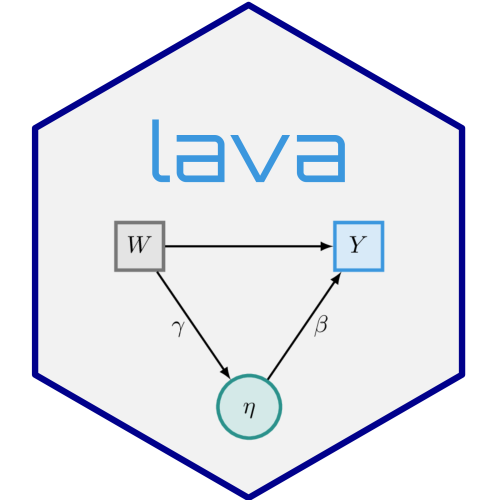
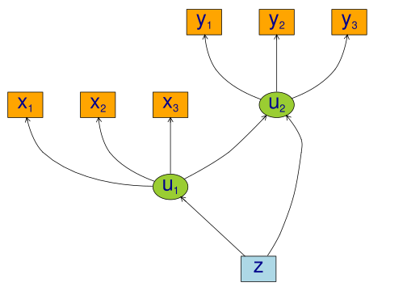
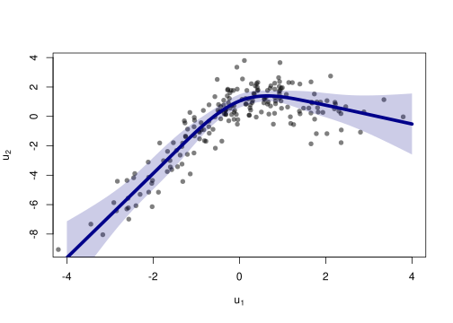
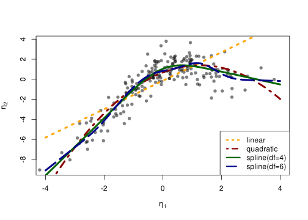
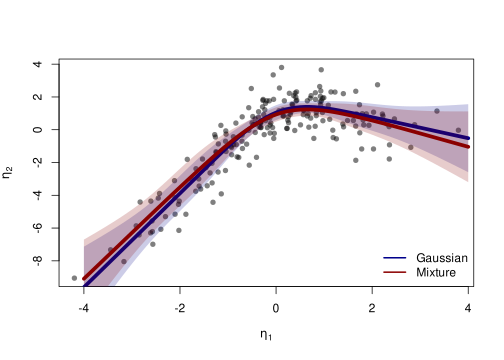

Non-linear latent variable models and error-in-variable models
2026-08-18
Source:vignettes/nonlinear.qmd
We consider the measurement models given by
X_{j} = u_{1} + \epsilon_{j}^{x}, \quad j=1,2,3 Y_{j} = u_{2} + \epsilon_{j}^{y}, \quad j=1,2,3 and with a structural model given by u_{2} = f(u_{1}) + Z + \zeta_{2} u_{1} = Z + \zeta_{1} with iid measurement errors \epsilon_{j}^{x},\epsilon_{j}^{y},\zeta_{1},\zeta_{2}\sim\mathcal{N}(0,1), j=1,2,3. and standard normal distributed covariate Z. To simulate from this model we use the following syntax:
f <- function(x) cos(1.25*x) + x - 0.25*x^2
m <- lvm(x1+x2+x3 ~ u1, y1+y2+y3 ~ u2, latent=~u1+u2)
regression(m) <- u1+u2 ~ z
functional(m, u2~u1) <- f
d <- sim(m, n=200, seed=42) # Default is all parameters are 1
## plot(m, plot.engine="visNetwork")
plot(m)
We refer to (Holst and Budtz-Jørgensen 2013) for details on the syntax for model specification.
Estimation
To estimate the parameters using the two-stage estimator described in (Holst and Budtz-Jørgensen 2020), the first step is now to specify the measurement models
Next, we specify a quadratic relationship between the two latent variables
nonlinear(m2, type="quadratic") <- u2 ~ u1and the model can then be estimated using the two-stage estimator
e1 <- twostage(m1, m2, data=d)
e1 Estimate Std. Error Z-value P-value
Measurements:
y2~u2 0.97686 0.03451 28.30873 <1e-12
y3~u2 1.04485 0.03485 29.98162 <1e-12
Regressions:
u2~z 0.88513 0.20778 4.25996 2.045e-05
u2~u1_1 1.14072 0.17410 6.55194 5.679e-11
u2~u1_2 -0.45055 0.07161 -6.29195 3.135e-10
Intercepts:
y2 -0.12198 0.10915 -1.11749 0.2638
y3 -0.09879 0.10545 -0.93680 0.3489
u2 0.67814 0.17363 3.90567 9.396e-05
Residual Variances:
y1 1.30730 0.17743 7.36790
y2 1.11056 0.14478 7.67064
y3 0.80961 0.13203 6.13219
u2 2.08483 0.28986 7.19258 We see a clear statistically significant effect of the second order term (u2~u1_2). For comparison we can also estimate the full MLE of the linear model:
e0 <- estimate(regression(m1%++%m2, u2~u1), d)
estimate(e0,keep="^u2~[a-z]",regex=TRUE) ## Extract coef. matching reg.ex. Estimate Std.Err 2.5% 97.5% P-value
u2~u1 1.4140 0.2261 0.97083 1.857 4.014e-10
u2~z 0.6374 0.2778 0.09291 1.182 2.177e-02Next, we calculate predictions from the quadratic model using the estimated parameter coefficients \mathbb{E}_{\widehat{\theta}_{2}}(u_{2} \mid u_{1}, Z=0),
newd <- expand.grid(u1=seq(-4, 4, by=0.1), z=0)
pred1 <- predict(e1, newdata=newd, x=TRUE)
head(pred1) y1 y2 y3 u2
[1,] -11.093569 -10.958869 -11.689950 -11.093569
[2,] -10.623561 -10.499736 -11.198861 -10.623561
[3,] -10.162565 -10.049406 -10.717187 -10.162565
[4,] -9.710579 -9.607878 -10.244928 -9.710579
[5,] -9.267605 -9.175153 -9.782084 -9.267605
[6,] -8.833641 -8.751230 -9.328656 -8.833641To obtain a potential better fit we next proceed with a natural cubic spline
kn <- seq(-3,3,length.out=5)
nonlinear(m2, type="spline", knots=kn) <- u2 ~ u1
e2 <- twostage(m1, m2, data=d)
e2 Estimate Std. Error Z-value P-value
Measurements:
y2~u2 0.97752 0.03453 28.31279 <1e-12
y3~u2 1.04508 0.03487 29.97132 <1e-12
Regressions:
u2~z 0.86729 0.20272 4.27816 1.884e-05
u2~u1_1 2.86231 0.67275 4.25464 2.094e-05
u2~u1_2 0.00344 0.10097 0.03409 0.9728
u2~u1_3 -0.26270 0.29398 -0.89362 0.3715
u2~u1_4 0.50778 0.35189 1.44301 0.149
Intercepts:
y2 -0.12185 0.10922 -1.11563 0.2646
y3 -0.09874 0.10545 -0.93638 0.3491
u2 1.83814 1.66430 1.10445 0.2694
Residual Variances:
y1 1.31286 0.17750 7.39636
y2 1.10412 0.14455 7.63858
y3 0.81124 0.13184 6.15312
u2 1.99404 0.26939 7.40217 Confidence limits can be obtained via the Delta method using the estimate method:
u1 Estimate Std.Err 2.5% 97.5% P-value
p1 -4.0 -9.611119 1.2647437 -12.08997 -7.132266 2.978251e-14
p2 -3.9 -9.324887 1.2051236 -11.68689 -6.962889 1.012296e-14
p3 -3.8 -9.038656 1.1463510 -11.28546 -6.791849 3.152439e-15
p4 -3.7 -8.752425 1.0885635 -10.88597 -6.618879 8.958702e-16
p5 -3.6 -8.466193 1.0319265 -10.48873 -6.443654 2.320153e-16
p6 -3.5 -8.179962 0.9766401 -10.09414 -6.265782 5.493600e-17The fitted function can be obtained with the following code:
plot(I(u2-z) ~ u1, data=d, col=Col("black",0.5), pch=16,
xlab=expression(u[1]), ylab=expression(u[2]), xlim=c(-4,4))
lines(Estimate ~ u1, data=as.data.frame(p), col="darkblue", lwd=5)
confband(p[,1], lower=p[,4], upper=p[,5], polygon=TRUE,
border=NA, col=Col("darkblue",0.2))
Cross-validation
A more formal comparison of the different models can be obtained by cross-validation. Here we specify linear, quadratic and cubic spline models with 4 and 9 degrees of freedom.
To assess the model fit average RMSE is estimated with 5-fold cross-validation repeated two times
## Scale models in stage 2 to allow for a fair RMSE comparison
d0 <- d
for (i in endogenous(m2))
d0[,i] <- scale(d0[,i],center=TRUE,scale=TRUE)
## Repeated 5-fold cross-validation:
ff <- lapply(list(linear=m2a,quadratic=m2b,spline4=m2c,spline6=m2d),
function(m) function(data,...) twostage(m1,m,data=data,stderr=FALSE,control=list(start=coef(e0),contrain=TRUE)))
fit.cv <- lava:::cv(ff,data=d,K=5,rep=2,mc.cores=parallel::detectCores(),seed=1)
fit.cv$coef RMSE
linear 2.137633
quadratic 1.806409
spline4 1.747002
spline6 1.760896Here the RMSE is in favour of the splines model with 4 degrees of freedom:
fit <- lapply(list(m2a,m2b,m2c,m2d),
function(x) {
e <- twostage(m1,x,data=d)
pr <- cbind(u1=newd$u1,predict(e,newdata=newd$u1,x=TRUE))
return(list(estimate=e,predict=as.data.frame(pr)))
})
plot(I(u2-z) ~ u1, data=d, col=Col("black",0.5), pch=16,
xlab=expression(eta[1]), ylab=expression(eta[2]), xlim=c(-4,4))
col <- c("orange","darkred","darkgreen","darkblue")
lty <- c(3,4,1,5)
for (i in seq_along(fit)) {
with(fit[[i]]$pr, lines(u2 ~ u1, col=col[i], lwd=4, lty=lty[i]))
}
legend("bottomright",
c("linear","quadratic","spline(df=4)","spline(df=6)"),
col=col, lty=lty, lwd=3)
For convenience, the function twostageCV can be used to do the cross-validation (also for choosing the mixture distribution via the nmix argument, see the section below). For example,
set.seed(1)
selmod <- twostageCV(m1, m2, data=d, df=2:4, nmix=1:2,
nfolds=5, rep=2, mc.cores=parallel::detectCores())applies cross-validation (here just 2 folds for simplicity) to select the best splines with degrees of freedom varying from 1-3 (the linear model is automatically included)
selmod────────────────────────────────────────────────────────────────────────────────
Selected mixture model: 2 components
AIC1
1 1961.839
2 1958.803
────────────────────────────────────────────────────────────────────────────────
Selected spline model degrees of freedom: 4
Knots: -3.958 -1.968 0.02149 2.011 4.001
RMSE(nfolds=, rep=)
df:1 2.135108
df:2 1.883176
df:3 1.918421
df:4 1.860711
────────────────────────────────────────────────────────────────────────────────
Estimate Std. Error Z-value P-value std.xy
Measurements:
y1~u2 1.00000 0.93509
y2~u2 0.97827 0.03464 28.24164 <1e-12 0.94291
y3~u2 1.04529 0.03482 30.01849 <1e-12 0.96175
Regressions:
u2~z 1.02726 0.22350 4.59630 4.301e-06 0.34700
u2~u1_1 2.61264 0.90770 2.87830 0.003998 1.13566
u2~u1_2 0.01368 0.06464 0.21164 0.8324 0.30984
u2~u1_3 -0.19029 0.17477 -1.08879 0.2762 -1.48961
u2~u1_4 0.35252 0.19173 1.83859 0.06597 0.52314
Intercepts:
y1 0.00000 0.00000
y2 -0.12170 0.10925 -1.11391 0.2653 -0.03871
y3 -0.09870 0.10546 -0.93592 0.3493 -0.02997
u2 1.54968 2.64293 0.58635 0.5576 0.51143
Residual Variances:
y1 1.31889 0.17659 7.46873 0.12560
y2 1.09634 0.14483 7.56960 0.11093
y3 0.81386 0.13260 6.13772 0.07504
u2 1.99291 0.28189 7.06988 0.21706Specification of general functional forms
Next, we show how to specify a general functional relation of multiple different latent or exogenous variables. This is achieved via the predict.fun argument. To illustrate this we include interactions between the latent variable u_{1} and a dichotomized version of the covariate z
d$g <- (d$z<0)*1 ## Group variable
mm1 <- regression(m1, ~g) # Add grouping variable as exogenous variable (effect specified via 'predict.fun')
mm2 <- regression(m2, u2~ u1+u2+u1:g+u2:g+z)
pred <- function(mu,var,data,...) {
cbind("u1"=mu[,1],"u2"=mu[,1]^2+var[1],
"u1:g"=mu[,1]*data[,"g"],"u2:g"=(mu[,1]^2+var[1])*data[,"g"])
}
ee1 <- twostage(mm1, model2=mm2, data=d, predict.fun=pred)
estimate(ee1,keep="u2~u",regex=TRUE) Estimate Std.Err 2.5% 97.5% P-value
u2~u2 0.4505 0.01528 0.42052 0.48041 4.550e-191
u2~u1 0.2315 0.12694 -0.01733 0.48026 6.823e-02
u2~u1:g 0.5926 0.23212 0.13768 1.04756 1.068e-02
u2~u2:g -0.1973 0.08832 -0.37041 -0.02419 2.549e-02A formal test show no statistically significant effect of this interaction
Call: estimate.default(x = ee1, keep = "(:g)", regex = TRUE)
────────────────────────────────────────────────────────────
Estimate Std.Err 2.5% 97.5% P-value
u2~u1:g 0.5926 0.23212 0.1377 1.04756 0.01068
u2~u2:g -0.1973 0.08832 -0.3704 -0.02419 0.02549
────────────────────────────────────────────────────────────
Null Hypothesis:
[u2~u1:g] = 0
[u2~u2:g] = 0
chisq = 43.1318, df = 2, p-value = 4.306e-10Mixture models
Lastly, we demonstrate how the distributional assumptions of stage 1 model can be relaxed by letting the conditional distribution of the latent variable given covariates follow a Gaussian mixture distribution. The following code explictly defines the parameter constraints of the model by setting the intercept of the first indicator variable, x_{1}, to zero and the factor loading parameter of the same variable to one.
m1 <- baptize(m1) ## Label all parameters
intercept(m1, ~x1+u1) <- list(0,NA) ## Set intercept of x1 to zero. Remove the label of u1
regression(m1,x1~u1) <- 1 ## Factor loading fixed to 1The mixture model may then be estimated using the mixture method (note, this requires the mets package to be installed), where the Parameter names shared across the different mixture components given in the list will be constrained to be identical in the mixture model. Thus, only the intercept of u_{1} is allowed to vary between the mixtures.
To decrease the risk of using a local maximizer of the likelihood we can rerun the estimation with different random starting values
summary(em0)Cluster 1 (n=162, Prior=0.776):
--------------------------------------------------
Estimate Std. Error Z value Pr(>|z|)
Measurements:
x1~u1 1.00000
x2~u1 0.99581 0.07940 12.54098 <1e-12
x3~u1 1.06345 0.08436 12.60541 <1e-12
Regressions:
u1~z 1.06674 0.08527 12.50988 <1e-12
Intercepts:
x1 0.00000
x2 0.03845 0.09890 0.38882 0.6974
x3 -0.02549 0.10333 -0.24668 0.8052
u1 0.20926 0.13162 1.58988 0.1119
Residual Variances:
x1 0.98540 0.13316 7.40026
x2 0.97181 0.13156 7.38695
x3 1.01316 0.14294 7.08815
u1 0.29046 0.11128 2.61004
Cluster 2 (n=38, Prior=0.224):
--------------------------------------------------
Estimate Std. Error Z value Pr(>|z|)
Measurements:
x1~u1 1.00000
x2~u1 0.99581 0.07940 12.54098 <1e-12
x3~u1 1.06345 0.08436 12.60541 <1e-12
Regressions:
u1~z 1.06674 0.08527 12.50988 <1e-12
Intercepts:
x1 0.00000
x2 0.03845 0.09890 0.38882 0.6974
x3 -0.02549 0.10333 -0.24668 0.8052
u1 -1.44289 0.25867 -5.57813 2.431e-08
Residual Variances:
x1 0.98540 0.13316 7.40026
x2 0.97181 0.13156 7.38695
x3 1.01316 0.14294 7.08815
u1 0.29046 0.11128 2.61004
--------------------------------------------------
AIC= 1958.803
||score||^2= 7.906111e-06 Measured by AIC there is a slight improvement in the model fit using the mixture model
The spline model may then be estimated as before with the two-stage method
em2 <- twostage(em0,m2,data=d)
em2 Estimate Std. Error Z-value P-value
Measurements:
y2~u2 0.97823 0.03464 28.23707 <1e-12
y3~u2 1.04530 0.03480 30.04033 <1e-12
Regressions:
u2~z 1.02884 0.22333 4.60677 4.09e-06
u2~u1_1 2.80414 0.65543 4.27832 1.883e-05
u2~u1_2 -0.02249 0.09997 -0.22498 0.822
u2~u1_3 -0.17332 0.28932 -0.59908 0.5491
u2~u1_4 0.38672 0.33978 1.13815 0.2551
Intercepts:
y2 -0.12171 0.10925 -1.11401 0.2653
y3 -0.09870 0.10546 -0.93588 0.3493
u2 2.12374 1.66609 1.27468 0.2024
Residual Variances:
y1 1.31872 0.17654 7.46974
y2 1.09690 0.14502 7.56379
y3 0.81345 0.13259 6.13512
u2 1.99590 0.28290 7.05501 In this example the results are very similar to the Gaussian model:
plot(I(u2-z) ~ u1, data=d, col=Col("black",0.5), pch=16,
xlab=expression(eta[1]), ylab=expression(eta[2]))
lines(Estimate ~ u1, data=as.data.frame(p), col="darkblue", lwd=5)
confband(p[,1], lower=p[,4], upper=p[,5], polygon=TRUE,
border=NA, col=Col("darkblue",0.2))
pm <- cbind(u1=newd$u1,
estimate(em2, f=function(p) predict(e2,p=p,newdata=newd))$coefmat)
lines(Estimate ~ u1, data=as.data.frame(pm), col="darkred", lwd=5)
confband(pm[,1], lower=pm[,4], upper=pm[,5], polygon=TRUE,
border=NA, col=Col("darkred",0.2))
legend("bottomright", c("Gaussian","Mixture"),
col=c("darkblue","darkred"), lwd=2, bty="n")
SessionInfo
R version 4.6.1 (2026-06-24)
Platform: x86_64-pc-linux-gnu
Running under: Ubuntu 24.04.4 LTS
Matrix products: default
BLAS: /usr/lib/x86_64-linux-gnu/openblas-pthread/libblas.so.3
LAPACK: /usr/lib/x86_64-linux-gnu/openblas-pthread/libopenblasp-r0.3.26.so; LAPACK version 3.12.0
locale:
[1] LC_CTYPE=C.UTF-8 LC_NUMERIC=C LC_TIME=C.UTF-8
[4] LC_COLLATE=C.UTF-8 LC_MONETARY=C.UTF-8 LC_MESSAGES=C.UTF-8
[7] LC_PAPER=C.UTF-8 LC_NAME=C LC_ADDRESS=C
[10] LC_TELEPHONE=C LC_MEASUREMENT=C.UTF-8 LC_IDENTIFICATION=C
time zone: UTC
tzcode source: system (glibc)
attached base packages:
[1] stats graphics grDevices utils datasets methods base
other attached packages:
[1] lava_1.9.2.1
loaded via a namespace (and not attached):
[1] mets_1.3.12 cli_3.6.6 knitr_1.51
[4] rlang_1.3.0 xfun_0.60 otel_0.2.0
[7] generics_0.1.4 jsonlite_2.0.0 future.apply_1.20.2
[10] listenv_1.0.0 htmltools_0.5.9 graph_1.90.0
[13] stats4_4.6.1 rmarkdown_2.31 grid_4.6.1
[16] evaluate_1.0.5 fastmap_1.2.0 numDeriv_2016.8-1.1
[19] mvtnorm_1.4-2 yaml_2.3.12 timereg_2.0.7
[22] compiler_4.6.1 codetools_0.2-20 Rcpp_1.1.2
[25] future_1.75.0 Rgraphviz_2.56.0 lattice_0.22-9
[28] digest_0.6.39 parallelly_1.48.0 parallel_4.6.1
[31] splines_4.6.1 Matrix_1.7-5 RcppArmadillo_15.4.2-1
[34] tools_4.6.1 globals_0.19.1 survival_3.8-6
[37] BiocGenerics_0.58.1